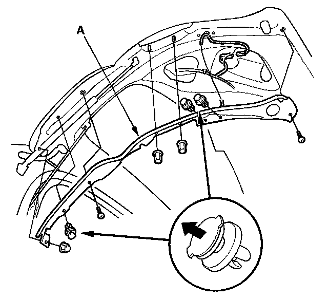

Power Trunk / Liftgate Hazard Sensor: Service and Repair
Pinch Sensor Replacement1. Open the tailgate.

2. Remove the clips, screws and nuts from the pinch sensor (A).
NOTE: The illustration shows left side pinch sensor, right side is symmetrical.
3. Disconnect the 2P connector (B) from the pinch sensor.
4. Install in the reverse order of removal.